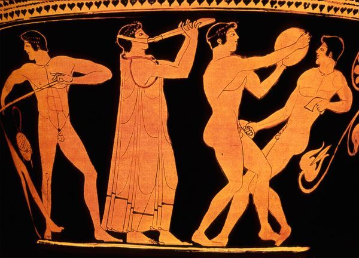
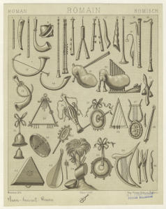

Muzica în antichitate
Originile artei muzicale trebuie căutate în îndepartata istorie a omenirii. Ca arta sonora poate fi considerata abia in momentul în care sunetele sunt conștient organizate,reflectand un anumit grad de evoluție în spiritualitatea omului primitiv.Astfel,omul devine creator de artă în momentul în care ajunge să stăpâneasca gândirea și vorbirea articulată. Primele practici de natură artistică sunt legate de procesul muncii, în colectiv,când apar comenzi ritmate, strigăte sau chemări, ingânări sau imbărbătări etc., mai apoi ca forme evoluate de magie, rituale, incantații, când elementul melodico-ritmat este alăturat dansului si cuvântului, formand astfel o artă sincretică ce s-a desfășurat pe o lungă perioadă de timp.

